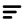

Pautia
Original
Cola a la derecha. Las dos primeras líneas son iguales y la tercera es más corta, alineada a la izquierda, como en tu referencia.
Sin fondo y sin rellenos blancos: las tres líneas son huecos transparentes. El gris que ves detrás pertenece a esta página, no al logo.

Cola a la derecha. Las dos primeras líneas son iguales y la tercera es más corta, alineada a la izquierda, como en tu referencia.
La misma burbuja reflejada, con la cola a la izquierda. Los tres huecos empiezan alineados a la izquierda; la línea corta conserva su tamaño.